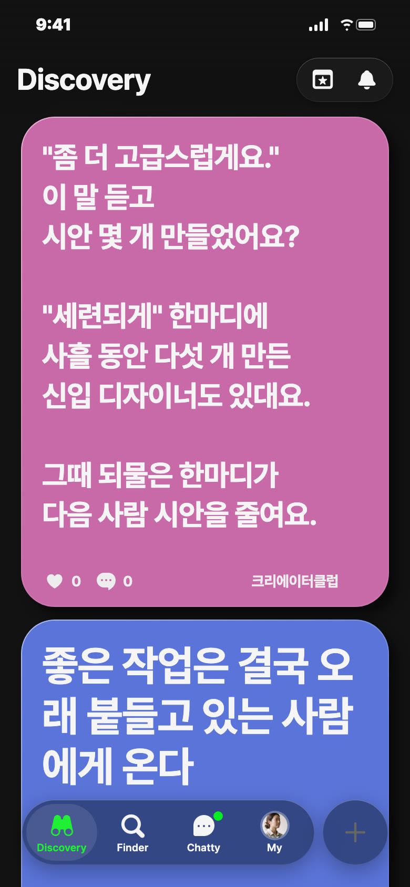
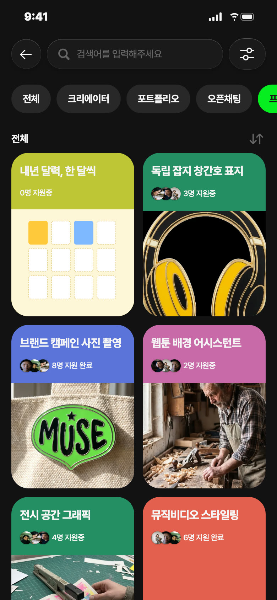
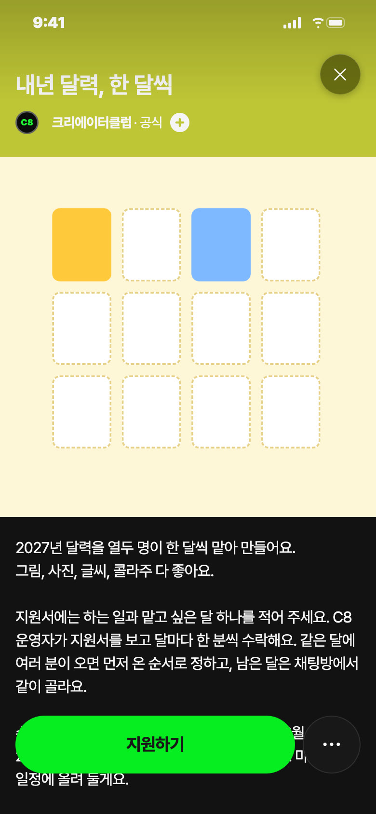
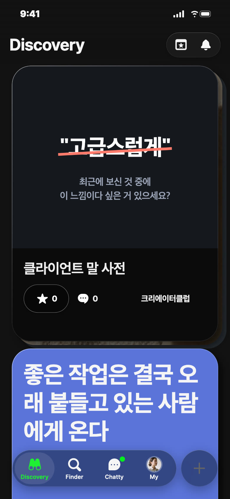
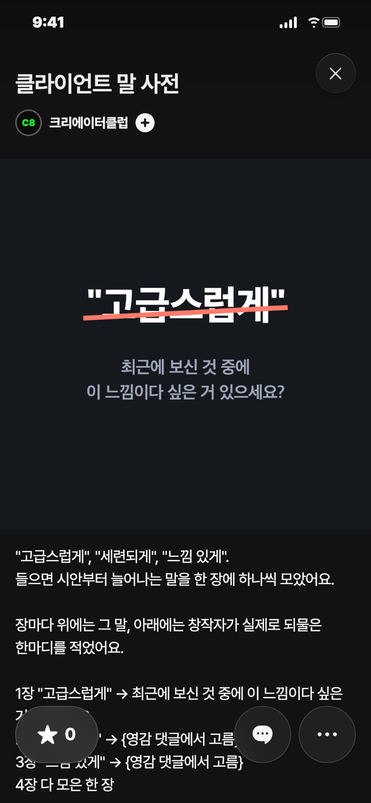

C8 앱 게시 시안 · 11/13(금) — 오늘 추천: 영감 · 낮 12시
오늘 추천 · 영감 · 낮 12시 · 분홍

칸: 창작자 공감 × 일 받기
왜 오늘: 금요일, 한 주 수정 끝낸 날 가볍게 웃고 넘길 말
보낼 사람: 외주 하는 친구에게 「너 이거 몇 개 만들었냐」
받고 싶은 댓글: 「어떤 브랜드 보고 그렇게 느끼셨는지 물어봤더니 한 번에 끝났어요」
영감 글
"좀 더 고급스럽게요." 이 말 듣고 시안 몇 개 만들었어요? "세련되게" 한마디에 사흘 동안 다섯 개 만든 신입 디자이너도 있대요. 그때 되물은 한마디가 다음 사람 시안을 줄여요.
비축 · 프로젝트 · 노랑


칸: 함께 만들기 × 결과물
왜 비축: 금요일은 쉬거나 하나만, 수요일 자리 후보 — 운영자·46 출시일·판형 파일은 게시 전 확정
보낼 사람: 그림 그리는 친구에게 「너 12월 해」
받고 싶은 지원: 「일러스트 해요. 눈 오는 1월 맡고 싶어요」
제목
내년 달력, 한 달씩
카테고리
함께 만들기
모집 내용
하는 일 · 맡고 싶은 달 하나 · 12/7까지 지원 · 12/20까지 한 장 · 상품 없음
설명
2027년 달력을 열두 명이 한 달씩 맡아 만들어요. 그림, 사진, 글씨, 콜라주 다 좋아요. 지원서에는 하는 일과 맡고 싶은 달 하나를 적어 주세요. C8 운영자가 지원서를 보고 달마다 한 분씩 수락해요. 같은 달에 여러 분이 오면 먼저 온 순서로 정하고, 남은 달은 채팅방에서 같이 골라요. 수락되면 자료실에서 세로 A4 판형을 받아요. 12월 20일까지 맡은 달 한 장을 게시판에 올려 주세요. 마감 날은 일정에 올려 둘게요. C8이 열두 장을 PDF 한 권으로 묶어 포트폴리오에 올리고, 달마다 만든 사람 활동명을 적어요. 맡은 한 장은 각자 포트폴리오에도 올려요. 지원은 12월 7일까지, 상품은 없어요. 열두 명이 한 장씩이면, 내년 한 해가 한 권이 돼요.
비축 · 포트폴리오


칸: 보여 주기 × 쓸모
왜 비축: 오늘 영감 댓글이 모인 뒤 C8이 묶는 결과물 — 2·3장 문장과 활동명 허락 전
보낼 사람: 수정 지옥 중인 동기에게 「이거 보내」
제목
클라이언트 말 사전
설명
"고급스럽게", "세련되게", "느낌 있게".
들으면 시안부터 늘어나는 말을 한 장에 하나씩 모았어요.
장마다 위에는 그 말, 아래에는 창작자가 실제로 되물은 한마디를 적었어요.
1장 "고급스럽게" → 최근에 보신 것 중에 이 느낌이다 싶은 거 있으세요?
2장 "세련되게" → {영감 댓글에서 고름}
3장 "느낌 있게" → {영감 댓글에서 고름}
4장 다 모은 한 장
되물은 말은 C8 영감 글 댓글에서 왔고, 활동명은 허락해 주신 분만 적었어요.
다음에 이 말을 들으면 시안보다 이 한 장을 먼저 보내요.
#외주 #피드백